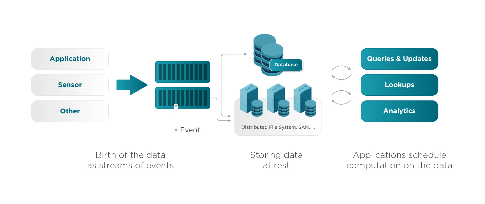

class: center, middle # Stream Processing Frameworks ## Compare between Flink and Jet --- ## Stream Processing - the practice of taking action on a series of data at the time the data is created - real time processing - computing on data directly as it is produced or received  --- ## Terminology - Batch (Bounded) & Stream (Unbounded) - Flink only has `Stream`, it treated `Batch` as `Bounded Stream` <img src="./bounded-unbounded.png" alt="" class="w-100"> - Data Pipeline: A **D**irected **A**cyclic **G**raph - **E**xtract: Source - **T**ransform: Process Function - Stateless - With State - Exactly Once/At Least Once Garantee? - **L**oad: Sink --- ## Frameworks - First Generation -- **Storm** - Event Level Processing / Millisecond Delay Level - At Least Once - No SQL, No state, Low Throughput - Second -- **Spark Streaming** - Mini-batch level processing / Second Delay Level - SQL / state / stream+batch - End to End Exactly Once - No advanced process functions (aggs, time window, etc) - Third -- **Flink**, **Jet** - Event level processing / Millisecond Delay Level - SQL / state / stream + batch - End to End Exactly Once What about **Kafka**: Kafka is known as ditributed messaging queue, but there is Kafka Streams for stream processing --- ## Test Pipeline for Flink, Jet ##### Work Count Pipeline - the "Hello World" in stream processing ```aidl - [Source] Read a book from local memory (5MB) -> [Process] Split line into words -> [Process] Group / Count each words show up times -> [Sink] Logger (do nothing) ``` ##### Work Count Pipeline - with Bomb ```aidl - [Source] Read a book from local memory (5MB) -> [Process] Split line into words, **each word emits out 1000 times** -> [Process] Group / Count each words show up times -> [Sink] Logger (do nothing) ``` ##### Order Bomb Pipeline ```aidl [Source] Read data from remote DB, 10k orders -> [Process] For each order, emit Pair[Client, Order] 1000 times -> [Process] Each Pair[Client, Order], enter process function (do nothing), emit [Order] -> [Sink] Save data to remote DB ``` --- ## Result | Jet | WordCount | WordCount w/ Bomb | Order Bomb<br/> (10k, Jet Portable) |Order Stream<br/>(10k, **Protobuf**) | Order Bomb<br/>(100k, Jet Portable) | Order Stream<br/>(No bomb, 1mn, Jet Portable) | |---|---|---|---|---|---|---| | 1st | 0.854 | 36.459 | 26.717 | 8.995 | 270.282 | 11.851 | | 2nd | 1.179 | 30.143 | 31.187 | 7.715 | - | 11.708 | | 3rd | 0.960 | 37.207 | 30.114 | 7.398 | - | 11.398 | <hr/> | Flink | WordCount | WordCount w/ Bomb | Order Bomb<br/> (10k, Flink TypeInfo) |Order Stream<br/>(10k, **Protobuf**) | Order Bomb<br/>(100k, Flink TypeInfo) | Order Stream<br/>(No bomb, 1mn, Flink TypeInfo) | |---|---|---|---|---|---|---| | 1st | 1.298 | 88.614 | 47.755 | 51.298 | 872.765 | 70.270 | | 2nd | 0.891 | 90.165 | 55.453 | 65.488 | - | 74.971 | | 3rd | 1.099 | 78.908 | 61.095 | 55.021 |- | 69.196 | --- ## Created DAG for WordCount ##### Jet 4.4 Pipeline: ```aidl # http://viz-js.com/ digraph DAG { "items" [localParallelism=1]; "fused(flat-map, filter)" [localParallelism=8]; "group-and-aggregate-prepare" [localParallelism=8]; "group-and-aggregate" [localParallelism=8]; "do-nothing-sink" [localParallelism=1]; "items" -> "fused(flat-map, filter)" [queueSize=1024]; "fused(flat-map, filter)" -> "group-and-aggregate-prepare"... ...[label="partitioned", queueSize=1024]; subgraph cluster_0 { "group-and-aggregate-prepare" -> "group-and-aggregate"... ...[label="distributed-partitioned", queueSize=1024]; } "group-and-aggregate" -> "do-nothing-sink" [queueSize=1024]; } ``` --- ## Created DAG for WordCount ##### Jet 4.4 Pipeline: --- ## Created DAG for WordCount ##### Flink 1.12.2 Pipeline: ```aidl { "nodes" : [ { "id" : 1, "type" : "Source: Custom Source", "pact" : "Data Source", "contents" : "Source: Custom Source", "parallelism" : 1 }, { "id" : 2, "type" : "Flat Map", "pact" : "Operator", "contents" : "Flat Map", "parallelism" : 8, "predecessors" : [ { "id" : 1, "ship_strategy" : "REBALANCE", "side" : "second" } ] }, { "id" : 4, "type" : "Keyed Aggregation", "pact" : "Operator", "contents" : "Keyed Aggregation", "parallelism" : 8, "predecessors" : [ { "id" : 2, "ship_strategy" : "HASH", "side" : "second" } ] }, { "id" : 5, "type" : "Sink: Unnamed", "pact" : "Data Sink", "contents" : "Sink: Unnamed", "parallelism" : 8, "predecessors" : [ { "id" : 4, "ship_strategy" : "FORWARD", "side" : "second" } ] } ] } ``` --- ## Created DAG for WordCount ##### Flink 1.12.2 Pipeline: <img src="./flink protobuf 10k.png" class="w-100"> --- ### Serialization Matters -- Protobuf Measures "create N items + put N items to Hazelcast Cache (Local, 1 node)" | Volume | Portable | Protofbuf | Protobuf / Portable * 100%| |---|---|---|---| |1k|1.23s | 0.082s| 6.65% | |10k|1.48s | 0.297s| 20.03% | |100k|2.568s | 1.107s| 43.09% | |1mn|12.394s | 8.9.16s| 71.93% | --- ## What makes diff? -- Commnucation Cost - CPU/Memory - (16cores \* 1 host) \> (4cores \* 4 hosts) - Network - Serialization/Deserialization - Recommend: Protobuf - Cluster Nodes Physical Distribution - 8 HK nodes \> (4 SG nodes + 4 HK nodes) - Stateless Process Function - Cut down outer dependencies! --- ## Flink / Jet Spec <table cellspacing=0 > <tr> <td style=min-width:50px></td> <td style=min-width:50px>Flink</td> <td style=min-width:50px>Hazelcast Jet</td> </tr> <tr> <td style=min-width:50px>Year</td> <td style=min-width:50px>2015</td> <td style=min-width:50px>2018</td> </tr> <tr> <td style=min-width:50px>Organization </td> <td style=min-width:50px>Apache</td> <td style=min-width:50px>Hazelcast</td> </tr> <tr> <td style=min-width:50px>Licence</td> <td style=min-width:50px>Apache License 2.0</td> <td style=min-width:50px>Apache License 2.0 <br/> Hazelcast Community License</td> </tr> <tr> <td style=min-width:50px>Processing Model</td> <td style=min-width:50px>Stream</td> <td style=min-width:50px>Batch, Stream</td> </tr> <tr> <td style=min-width:50px>Programming Model</td> <td style=min-width:50px colspan="2">DataFlow (Fundanmentally same)</td> </tr> <tr> <td style=min-width:50px>Resource Management</td> <td style=min-width:50px colspan="2">Standalone, YARN, Mesos, Docker</td> </tr> <tr> <td style=min-width:50px>Implementation Language</td> <td style=min-width:50px>Scala (JVM)</td> <td style=min-width:50px>Java</td> </tr> <tr> <td style=min-width:50px>Programming Language</td> <td style=min-width:50px colspan="2">JVM-based language(Java, Kotlin, Scala), Python, SQL</td> </tr> <tr> <td style=min-width:50px>SQL Interface</td> <td style=min-width:50px>Yes</td> <td style=min-width:50px>Yes</td> </tr> <tr> <td style=min-width:50px>StackOverflow Questions</td> <td style=min-width:50px>9015</td> <td style=min-width:50px>6629</td> </tr> <tr> <td style=min-width:50px>Data Source/Sink</td> <td style=min-width:50px colspan="2">Files, Message System (Kafka, Pulsar, etc), JDBC, CDC, ES… +Customizable </td> </tr> <tr> <td style=min-width:50px>Management GUI</td> <td style=min-width:50px>Yes</td> <td style=min-width:50px>No</td> </tr> <tr> <td style=min-width:50px>Task Execution Model</td> <td style=min-width:50px>Multithreading with taskslot concept</td> <td style=min-width:50px>Copperative multithreading with Conroutine concept</td> </tr> <tr> <td style=min-width:50px>Resources</td> <td style=min-width:50px>Dedicated Memory/Shared CPU</td> <td style=min-width:50px>Shared memory, CPU</td> </tr> </table> --- ## Points of Choose ##### 0. Split storage and computation ##### 1. Cares latency/thoughput very much ###-> Jet ##### 2. Multi tenants shares one big stream processing cluster ###-> Flink <hr> <div class="flow"> <h5>Kubernetes</h5> <div class="flow-diagram"> <div> <h5>Databases</h5> <span>- MySQL</span> <span>- Elastic Search</span> <span>- IMDB</span> </div> <span class="arrow">→</span> <div> <h5>Message Queue</h5> <span>- Kafka</span> <span>- Pulsar</span> <span>- RabbitMQ</span> </div> <span class="arrow">→</span> <div> <h5>Stream Processing</h5> <span>- Flink</span> <span>- Jet</span> <span>- Kalfa Streams</span> </div> <span class="arrow">→</span> <div> <h5>Other Databases..</h5> </div> <span class="arrow">→</span> <div> <h5>Data Streaming</h5> <span>- Netty</span> <span>- npm/ws</span> </div> </div> </div> --- ## Appendix - RESTful API Architecture - Flink Reference - https://flink.apache.org/ - [Architecture](https://flink.apache.org/flink-architecture.html) - [Install Link](https://ci.apache.org/projects/flink/flink-docs-release-1.12/try-flink/local_installation.html) - [ETL](https://ci.apache.org/projects/flink/flink-docs-stable/zh/learn-flink/etl.html) - Hazelcast - https://jet-start.sh/ - [Big_Stream_Processing_Systems_An_Experimental_Evaluation](https://www.researchgate.net/publication/334158029_Big_Stream_Processing_Systems_An_Experimental_Evaluation)